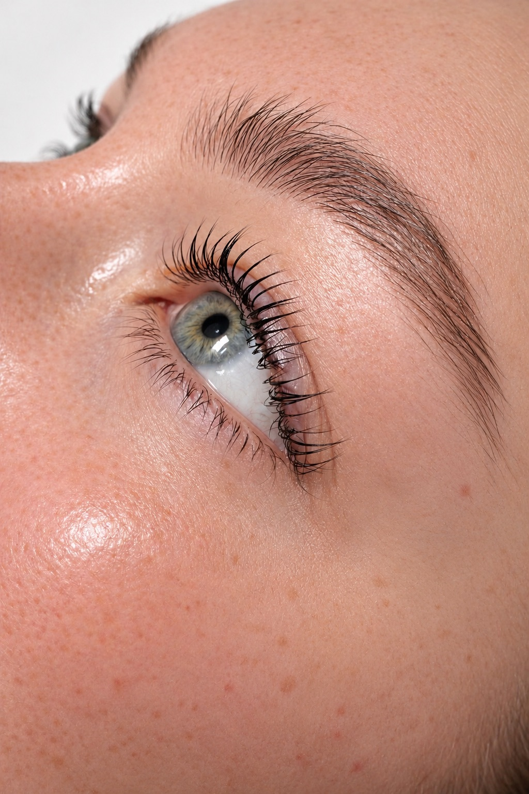
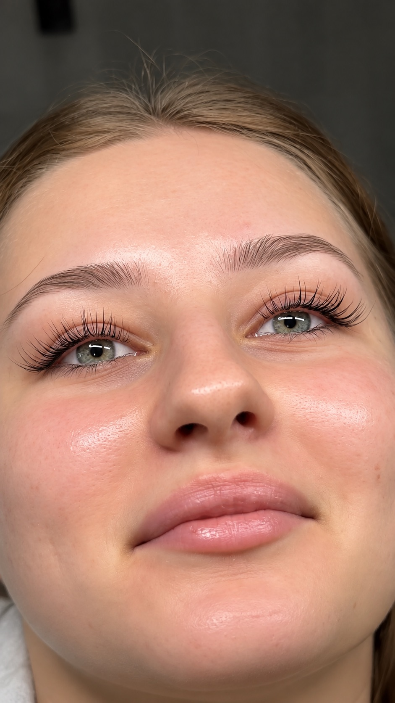

Keratinsko vihanje trepalnic v Mariboru
Keratin lash lift in Maribor
Кератиновое завивание ресниц в Мариборе
Keratinsko vihanje trepalnic (pogosto imenovano tudi laminacija trepalnic) dvigne naravne trepalnice in jim da lepo krivuljo, tako da je pogled bolj odprt in urejen — brez podaljševanja in brez vsakodnevnega kodranja s kleščami. Rezultat je viden takoj in zdrži več tednov.
A keratin lash lift (also known as lash lamination) raises the natural lashes and gives them a beautiful curve, so the eyes look more open and groomed — without extensions and without daily curling. The result is visible immediately and lasts several weeks.
Кератиновое завивание ресниц (его также называют ламинированием ресниц) поднимает натуральные ресницы и придаёт им красивый изгиб — взгляд становится более открытым и ухоженным, без наращивания и без ежедневных щипцов. Результат виден сразу и держится несколько недель.


Kaj je keratinsko vihanje
What a keratin lash lift is
Что такое кератиновое завивание
Gre za tretma, pri katerem se naravne trepalnice oblikujejo navzgor in utrdijo s keratinom. Keratin je beljakovina, ki je naravno prisotna v laseh in trepalnicah — zato so trepalnice po tretmaju videti negovane, ne pa umetne. Tretma ne dodaja dlačic, ampak izboljša tisto, kar že imate.
This is a treatment in which the natural lashes are shaped upwards and set with keratin. Keratin is a protein naturally present in hair and lashes — that is why the lashes look cared for after the treatment, not artificial. The treatment does not add hairs; it improves what you already have.
Это процедура, при которой натуральные ресницы подкручиваются вверх и фиксируются кератином. Кератин — белок, естественно присутствующий в волосах и ресницах, поэтому после процедуры они выглядят ухоженными, а не искусственными. Процедура не добавляет волоски, а улучшает то, что у вас уже есть.
Kako poteka tretma
How the treatment works
Как проходит процедура
Najprej očistim trepalnice in zaščitim kožo pod očmi. Sledi oblikovanje s silikonskimi blazinicami, ki določijo krivuljo, nato nanos kreme za vihanje in keratinske nege. Na koncu trepalnice utrdim in nahranim. Celoten postopek traja približno 60 minut, med njim imate zaprte oči in mirujete.
First I cleanse the lashes and protect the skin under the eyes. Then comes shaping with silicone pads that set the curve, followed by the lifting cream and keratin care. At the end the lashes are fixed and nourished. The whole procedure takes about 60 minutes; your eyes stay closed and you rest during it.
Сначала очищаю ресницы и защищаю кожу под глазами. Затем формирую изгиб на силиконовых подушечках, наношу состав для завивания и кератиновый уход. В конце фиксирую и питаю ресницы. Вся процедура занимает около 60 минут; глаза закрыты, вы спокойно лежите.
Komu ustreza
Who it suits
Кому подходит
Tretma je namenjen tistim, ki imajo ravne ali navzdol usmerjene trepalnice in si želijo bolj odprt pogled. Primeren je tudi, če nosite očala ali če se vam trepalnice zaradi maskare lepijo. Ni priporočljiv ob vnetju očesa, pri zelo tankih in poškodovanih trepalnicah ali takoj po podaljševanju — v takem primeru raje počakamo, da si trepalnice opomorejo.
The treatment is for those with straight or downward-growing lashes who want a more open look. It also works if you wear glasses or if your lashes stick together from mascara. It is not recommended during an eye infection, with very thin or damaged lashes, or right after extensions — in that case we wait for the lashes to recover.
Процедура подходит тем, у кого прямые или опущенные ресницы и хочется более открытого взгляда. Также подойдёт, если вы носите очки или ресницы склеиваются от туши. Не рекомендуется при воспалении глаза, очень тонких и повреждённых ресницах или сразу после наращивания — тогда лучше подождать, пока ресницы восстановятся.
Cena in trajanje
Price and duration
Цена и длительность
Keratinsko vihanje trepalnic 48 €, trajanje 60 minut. Cena vključuje čiščenje, oblikovanje, keratin in zaključno nego. Celoten cenik najdete na strani Storitve.
Keratin lash lift €48, duration 60 minutes. The price includes cleansing, shaping, keratin and final care. The full price list is on the Services page.
Кератиновое завивание ресниц 48 €, длительность 60 минут. В цену входит очищение, формирование изгиба, кератин и финальный уход. Полный прайс — на странице Услуги.
Nega po tretmaju
Aftercare
Уход после процедуры
Prvih 24 ur ne močite trepalnic, ne uporabljajte maskare in ne spite na obrazu. Po tem lahko živite normalno — maskaro lahko nanašate, a priporočam vodoodporno ali lahko formulo. Za daljši učinek uporabljajte hranilno serum za trepalnice in se izogibajte močnemu drgnjenju oči.
For the first 24 hours do not wet the lashes, do not use mascara and do not sleep on your face. After that you can live normally — mascara is fine, though I recommend a water-based or light formula. For a longer effect use a nourishing lash serum and avoid rubbing your eyes strongly.
Первые 24 часа не мочите ресницы, не пользуйтесь тушью и не спите на лице. После этого можно жить как обычно — тушь разрешена, лучше на водной основе или лёгкая. Для более долгого эффекта используйте питательную сыворотку для ресниц и не трите глаза.
Pogosta vprašanja
Frequently asked questions
Частые вопросы
Koliko časa zdrži?How long does it last?Сколько держится?
Običajno 6–8 tednov, odvisno od rasti naravnih trepalnic in nege. Ker trepalnice rastejo, se čez čas krivulja poravna — takrat je čas za obnovo.
Usually 6–8 weeks, depending on natural lash growth and care. Because lashes grow, the curve gradually straightens — that is when it is time for a refresh.
Обычно 6–8 недель — зависит от роста натуральных ресниц и ухода. Ресницы растут, поэтому изгиб постепенно выпрямляется — тогда пора на обновление.
Ali lahko po tretmaju nosim maskaro?Can I wear mascara afterwards?Можно ли пользоваться тушью после процедуры?
Da, po prvih 24 urah. Priporočam lažjo formulo, ki se sname z vodo, da trepalnic ne obremenjujete preveč.
Yes, after the first 24 hours. I recommend a lighter, water-based formula so the lashes are not overloaded.
Да, после первых 24 часов. Рекомендую более лёгкую формулу на водной основе, чтобы не перегружать ресницы.
Ali tretma škoduje trepalnicam?Does the treatment damage the lashes?Вредит ли процедура ресницам?
Ob pravilni izvedbi in premoru med tretmaji ne. Pomembno je, da se ne ponavlja prepogosto — priporočam vsaj 6–8 tednov premora in redno nego.
With correct technique and a break between treatments, no. It matters not to repeat it too often — I recommend at least 6–8 weeks between appointments and regular care.
При правильном выполнении и перерыве между процедурами — нет. Важно не повторять слишком часто: рекомендую минимум 6–8 недель между процедурами и регулярный уход.
Rezervirajte termin v Mariboru
Book your appointment in Maribor
Запишитесь в Мариборе
Termin rezervirate na strani Rezervacija ali prek WhatsAppa.
Book on the booking page or via WhatsApp.